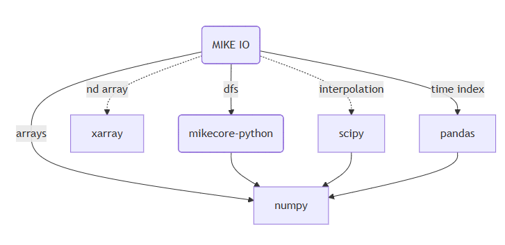

Dependencies and Continuous Integration
Application
A program that is run by a user
- command line tool
- script
- web application
Pin versions to ensure reproducibility, e.g. numpy==1.11.0
Library
A program that is used by another program
- Python package
- Low level library (C, Fortran, Rust, …)
Make the requirements as loose as possible, e.g. numpy>=1.11.0
Dependency tree
uv
- üöÄ A single tool to replace pip, pip-tools, pipx, poetry, pyenv, twine, virtualenv, and more.
- ⚡️ 10-100x faster than pip.
- üóÇÔ∏è Provides comprehensive project management, with a universal lockfile.
- ❇️ Runs scripts, with support for inline dependency metadata.
- üêç Installs and manages Python versions.
- üõ†Ô∏è Runs and installs tools published as Python packages.
- üî© Includes a pip-compatible interface for a performance boost with a familiar CLI.
- üíæ Disk-space efficient, with a global cache for dependency deduplication.
- ⏬ Installable without Rust or Python via curl or pip.
- üñ•Ô∏è Supports macOS, Linux, and Windows.
Dependency management
uv is the recommended tool for managing a Python project including dependencies.
Example of pinning versions:
Or using a range of versions:
Development dependencies
Dependency management using uv CLI
- Add a dependency:
- Add development dependency:
Creating an installable package
With uv the the package will be installed in editable mode when you create it with:
Start a Python session:
Virtual environments
- Creates a clean environment for each project
- Allows different versions of a package to coexist on your machine
- Can be used to create a reproducible environment for a project
- Virtual environments are managed by
uv
Continuous Integration
Running tests on every commit in a well defined environment ensures that the code is working as expected.
It solves the “it works on my machine” problem.
Executing code on a remote server is a good way to ensure that the code is working as expected.
There are many CI services available, e.g.:
- GitHub Actions
- Azure Pipelines
- Travis CI
- Circle CI
GitHub Actions
- Workflow are stored in the
.github/workflowsfolder. - Workflow is described in a YAML file.
- YAML is whitespace sensitive (like Python).
- YAML can contain lists, dictionaries and strings, and can be nested.
name: Quick test
on: # when to run the workflow
push:
branches: [ main]
pull_request:
branches: [ main ]
jobs: # which jobs to run
build: # descriptive name üôÑ
runs-on: ubuntu-latest # on what operating system
steps:
- uses: actions/checkout@v3
- name: Set up uv
uses: astral-sh/setup-uv@v6
with:
python-version: "3.13"
- name: Install dependencies
run: |
uv sync
- name: Test with pytest
run: |
uv run pytestüôÇüöÄ

☹️

Benefits of CI
- Run tests on every commit
- Test on different operating systems
- Test on different Python versions
- Create API documentation (next week)
- Publish package to PyPI or similar package repository (two weeks from now)
Triggers
pushandpull_requestare the most common triggersschedulecan be used to run the workflow on a scheduleworkflow_dispatchcan be used to trigger the workflow manually
Jobs
- Operating system
- Python version
- …
GitHub Releases
GitHub releases are a way to publish software releases.
You can upload files, write release notes and tag the release.
As a minimum, the release will contain the source code at the time of the release.
Creating a release can trigger other workflows, e.g. publishing a package to PyPI.

Summary
- Application vs library
- Use a separate virtual environment for each project
- Use GitHub Actions to run tests on every commit
- Use GitHub Releases to publish software releases
Python package development